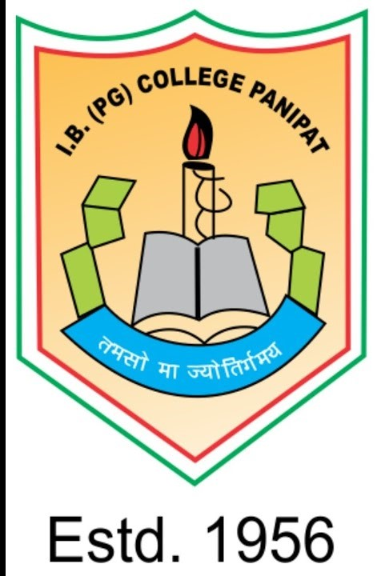
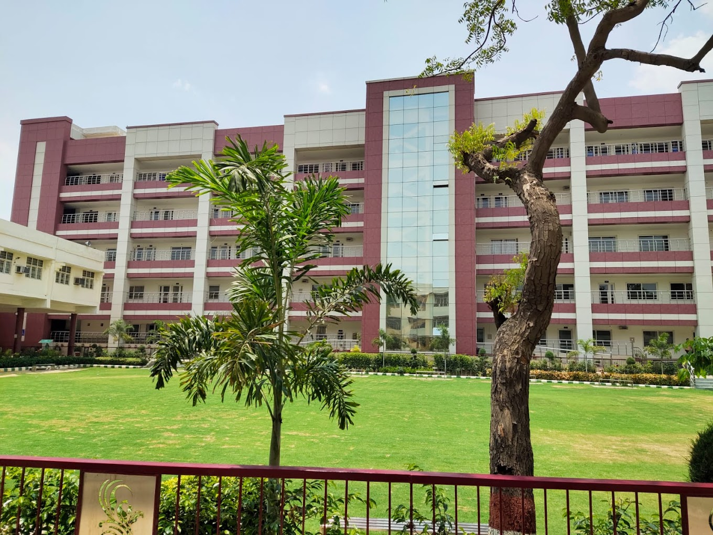

| SALIENT FEATURE-: * EXCELENCE RESULT * PLACEMANT CELL * WI-FI CAMPUS * RICH LIBERARY * WELL EQUIPPED * SCIENCE LAB |
| SALIENT FEATURES-: * SPORT ACTIVITIES * CULTURAL ACTIVITIES * RO FILTERED DRINKING WATER * N.C.C * * N.S.S * * N.S.D * |
| 
*I.B. (PG) College Panipat* OF PROFESSIONAL EDUCATION A Premier Co-educational Insitute | Affiliate to Kurukshetra University Contact: 0180 - 2636700, 2638259 Website: ibpgcollegepanipat.com E-mail id: principalibcollege@gmail.com |
|---|
| Address: Old Housing Board Colony, Prakash Nagar, G.T. Road Panipat, Haryana 132103 Hours: |
|---|
| *UNDER GRADUATION COURSE-: |
|---|
| Bachelor of Science (NON-MEDICAL) |
| Bachelor of Science (MEDICAL) |
| Bachelor of Science (Computer Science) |
| Bachelor of Science (BIO-TECH) |
| Bachelor of Commerce |
| Bachelor of Commerce(Computer Applicalion) |
| Bachelor of Commerce(HONS.) |
| Bachelor of Commerce(VOCATIONAL) |
| Bachelor of Computer Application |
| Bachelor of Business Application |
| Bachelor of Arts(English Honours) |
| Bachelor of Arts(With Math, Economics, Sanskrit, Functional,English, Music(T), Music(V), Home-Science, History, Political Science, Hindi, English, Computer) |
| *POST GRADUATION COURSE-: |
|---|
*Master of Arts(English) |
*Master of Arts(Hindi) |
*Master of Commerce |
*Master of Science(Maths) |
|  |
|---|